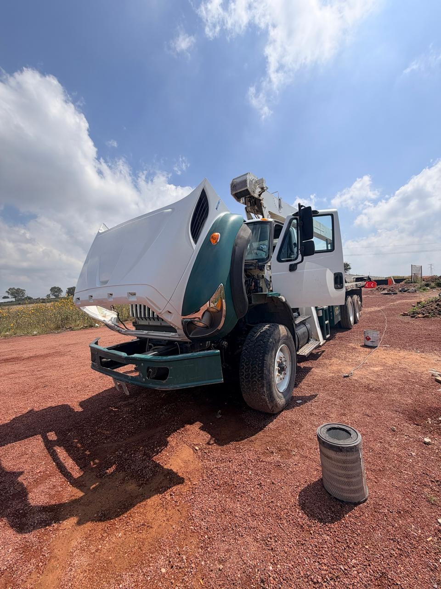
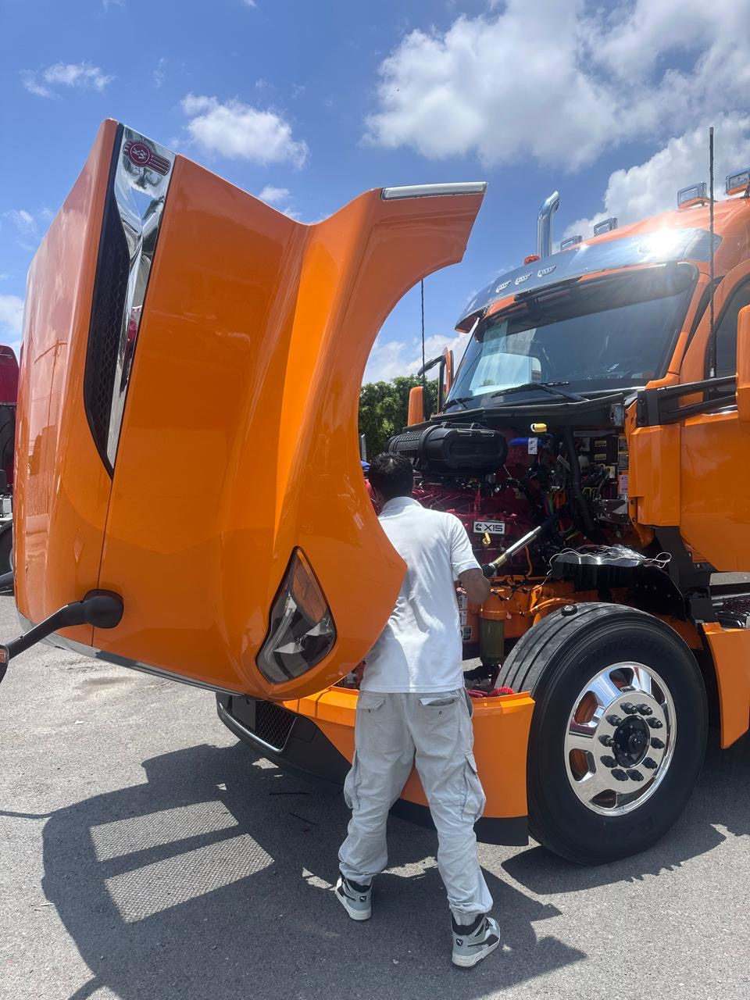

Computadoras de motor
Programamos y configuramos la computadora que controla tu motor para que entregue la potencia y el consumo que debe. La programación toma alrededor de 30 minutos.
Ver más sobre computadoras de motorSi tu unidad está detenida o no entrega el rendimiento que debe, revisamos la computadora del motor y la devolvemos a operación. La mayoría de las programaciones se resuelven en unos 30 minutos.
Cuatro especialidades, con diez años de experiencia detrás de cada una.
Programamos y configuramos la computadora que controla tu motor para que entregue la potencia y el consumo que debe. La programación toma alrededor de 30 minutos.
Ver más sobre computadoras de motorRegeneraciones que no terminan, modo protección y gasto de urea. Revisamos y reprogramamos DPF, EGR, SCR y DEF.
Ver más sobre sistemas de emisionesAntes de programar, medimos. Te decimos qué falla de verdad para que no cambies piezas que no lo necesitan.
Ver más sobre diagnóstico electrónicoSi la computadora quedó bloqueada o perdió su programación, casi siempre se recupera sin comprar una nueva.
Ver más sobre módulos bloqueados y flotillasDiez años programando estas ocho marcas, de carretera y de obra, con sus plataformas electrónicas específicas. Trabajamos varias más —Hino, Isuzu, Komatsu, Perkins, Doosan— que no alcanzamos a listar aquí: así sabes exactamente en qué manos queda tu motor.
ProInstall And Diesel Solutions se dedica a la programación electrónica de maquinaria pesada y tractocamiones. Diez años de experiencia en el ramo nos respaldan.
Trabajamos con la computadora que controla el motor: la programamos, la configuramos a tu unidad y resolvemos las fallas que la dejan detenida. Primero diagnosticamos, luego te entregamos el resultado con precio y tiempo, y hasta entonces intervenimos.
 10 añosde experiencia nos respaldan
10 añosde experiencia nos respaldan
Nos dices qué unidad traes y qué está pasando.
Revisamos la electrónica y encontramos la causa.
Precio y tiempo estimado antes de tocar nada.
Programamos, probamos y la unidad vuelve a operar. La programación toma cerca de 30 minutos.

Falla intermitente de computadora y pérdida de potencia. Diagnóstico en el lugar y unidad de vuelta a ruta dentro de las 24 horas.

Computadora bloqueada después de una falla eléctrica en obra. Se recuperó la programación sin comprar módulo nuevo.

Unidades de la misma flotilla con configuraciones distintas. Se dejaron todas con la misma calibración.
Aquí podemos ayudarte: mándanos qué motor traes y qué está pasando. Te decimos qué sigue, cuánto cuesta y cuánto tarda, sin compromiso.